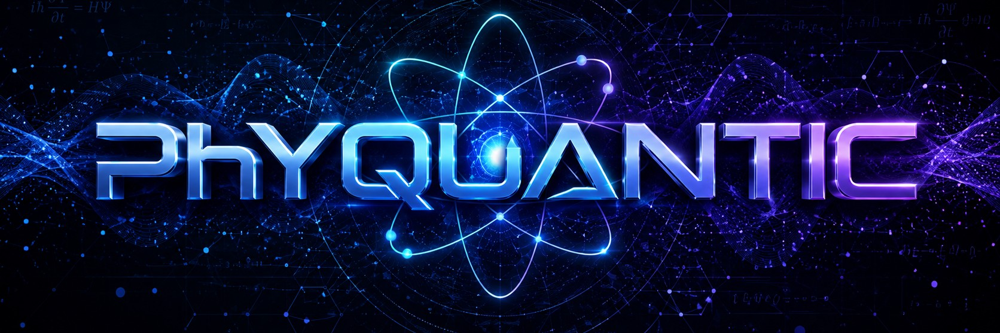

O que é a física quântica?
A física quântica é o ramo da ciência que estuda o universo em sua menor escala possível, analisando o comportamento e a interação de átomos e partículas subatômicas como elétrons e fótons. Diferente da física clássica, que rege o mundo visível e previsível do nosso cotidiano, o mundo quântico é governado por leis contra-intuitivas onde a energia não se move de forma contínua, mas sim em pacotes indivisíveis chamados quanta. Nessa realidade microscópica, a matéria exibe uma dualidade onda-partícula, o que significa que um elétron pode se comportar tanto como um objeto sólido quanto como uma onda espalhada pelo espaço. Além disso, as partículas operam sob o princípio da superposição, existindo em múltiplos estados ou locais simultaneamente até que uma medição force o sistema a escolher uma única realidade. Essa natureza probabilística, onde o determinismo dá lugar a chances e possibilidades, revolucionou a ciência e permitiu o desenvolvimento de tecnologias cruciais para a sociedade moderna, incluindo os chips de computadores, as telas de smartphones, o laser e os modernos aparelhos de ressonância magnética hospitalar.